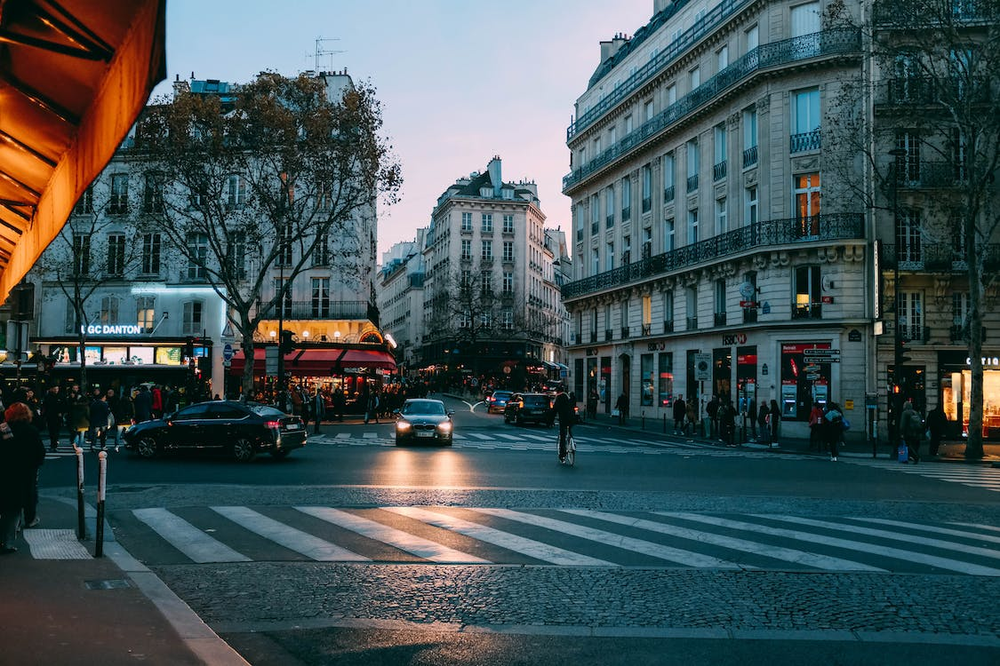
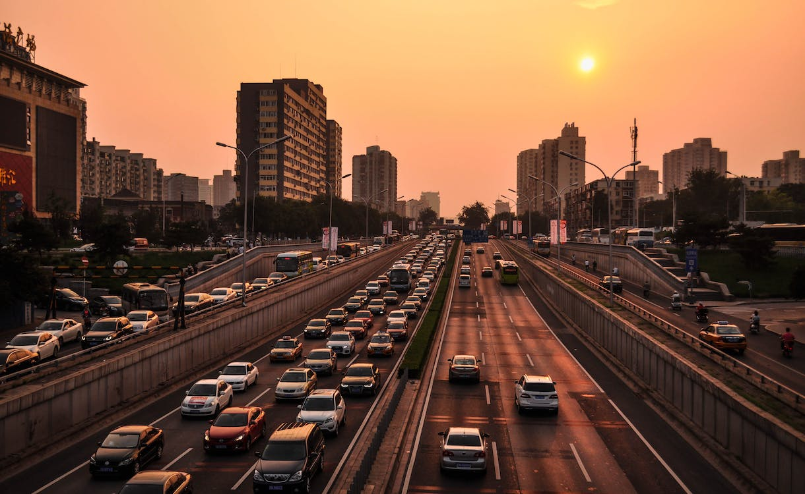

In the intricate and ever-evolving tapestry of urban life, the profound and multifaceted influence of technology has emerged as a powerful brush, painting vibrant strokes across the cityscape. As we navigate the labyrinthine streets of our metropolises, it is impossible to ignore the profound changes that technology has ushered into our daily lives and the very essence of our cities. The fusion of technology and urbanity has given birth to a dynamic and interconnected urban landscape, a living canvas where innovation and transformation abound. In this exploration, we will journey through the intricate and fascinating impact of technology on cityscapes, uncovering the vibrant threads of change that have woven themselves into the fabric of our urban existence.
⇨ Smart Infrastructure
Modern cities are undergoing a remarkable transformation, becoming smarter and more efficient hubs of human activity, all thanks to the infusion of technology into their very fabric. The concept of smart infrastructure is now a defining feature of contemporary urban landscapes. For instance, intelligent traffic management systems are implemented to not only monitor traffic flow but also actively reduce congestion by adjusting traffic signals in real-time based on traffic conditions.

Furthermore, energy-efficient buildings equipped with smart climate control systems can adapt to weather conditions, optimizing energy consumption. These innovations not only save costs for building owners but also significantly reduce carbon emissions. Smart grids have emerged as a crucial element in optimizing energy distribution, reducing waste, and lowering our carbon footprint. The integration of renewable energy sources and improved energy storage capabilities are making cities more resilient and sustainable.
Waste management has also undergone a technological revolution. Advanced systems now employ sensors and data analysis to streamline garbage collection and recycling. These systems can predict when bins need emptying and optimize collection routes, ultimately making our cities cleaner, more efficient, and environmentally responsible.
⇨ Transportation Revolution
Waste management has also undergone a technological revolution. Advanced systems now employ sensors and data analysis to streamline garbage collection and recycling. These systems can predict when bins need emptying and optimize collection routes, ultimately making our cities cleaner, more efficient, and environmentally responsible.

Additionally, ambitious projects such as Hyperloop and high-speed rail systems promise to connect cities more efficiently and faster than ever before. This improved connectivity not only facilitates easier access to employment and business opportunities but also fosters economic growth by creating metropolitan regions with greater interconnectivity.
⇨ The Digital Canvas of Connectivity
In the 21st century, the cityscape is characterized by profound interconnectedness. The proliferation of 5G networks and the Internet of Things (IoT) has made cities increasingly wired and data-driven. This digital connectivity enhances safety, efficiency, and convenience. For example, smart streetlights adjust their brightness according to foot traffic, reducing energy consumption and light pollution.
Cities leverage data analytics to predict and mitigate a wide range of urban challenges. This includes predicting traffic jams and optimizing public services, which, in turn, leads to more effective urban planning and resource allocation. Public safety is also improved through technology, with features like smart surveillance systems and responsive emergency services.
⇨ Virtual and Augmented Reality
Technology has blurred the lines between the physical and the virtual in the urban environment. Augmented reality (AR) and virtual reality (VR) applications are transforming how we experience the city.
Tourists can explore historical sites through AR apps that overlay digital information on the real-world environment. Architects and urban planners use VR to design and visualize cityscapes before construction begins, allowing for more accurate and efficient urban planning and development.
⇨ The Greening of Urban Spaces
The impact of technology on cityscapes goes beyond digital transformation; it is also about environmental stewardship. Cities worldwide are embracing the idea of integrating green spaces into urban environments. Vertical gardens, green roofs, and urban farming initiatives are popping up in various metropolises, adding a touch of greenery to the concrete jungle. These green spaces not only improve the aesthetic appeal of cities but also provide environmental benefits, such as improved air quality, temperature regulation, and increased biodiversity.
Furthermore, technology plays a crucial role in the management of urban green spaces. Sensors monitor soil moisture and other environmental factors to ensure these green areas thrive in the sometimes harsh conditions of the urban environment, leading to healthier and more vibrant urban ecosystems.
⇨ A Tapestry of Innovation
In conclusion, technology has woven a multifaceted tapestry of innovation and transformation across cityscapes worldwide. As urbanization continues its relentless march, the integration of technology is not merely a luxury but a necessity for creating sustainable, efficient, and enjoyable cities. From the smart infrastructure that underpins our urban life to transportation revolutions and the fusion of the physical and the digital, technology is reshaping our urban lives in myriad ways.
The next time you wander through the streets of your city, take a moment to appreciate the invisible hand of technology at work, shaping the dynamic and ever-evolving cityscapes we call home. In the intricate and multifaceted fabric of the modern city, technology has emerged as the weaver of a new urban narrative, one that promises a brighter, more sustainable, and interconnected future for urban dwellers around the world.